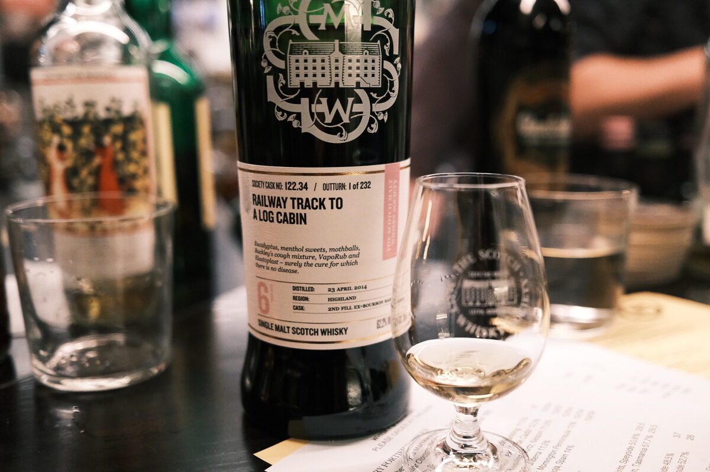

Croftengea (Loch Lomond) "Railway track to a log cabin" 2014 SMWS 122.34 6 years 62.2% (second fill ex-bourbon barrel)
What if we took a melon and turned it into a bomb?
Colour Light gold.
Nose Volatile! Melons: rockmelon and honeydew. Classic Loch Lomond (nb. stop saying this. nb2. no). Fennel and liquorice. Artificial fruit flavouring. Whipped cream and berries. Malt. Esters. The hard bits of jelly that stick in the fridge. With water, fruit jellies… and more fennel.
Palate So alcoholic. Melons. Super tart, toffee apples. Chilli and cinnamon. Fire. With water, brown sugar.
Finish Big hit of lemons and artificial melon flavouring… can’t spell melon without lemon! Long, hot, and spicy. With water, a little bitterness, amaro-esque. Digestif.
Comments Loch Lomond turned to 11. Melon bomb (read: simple and hot). Really needs time. 86/100.

Posted by Dominic on 14 Jun 2021